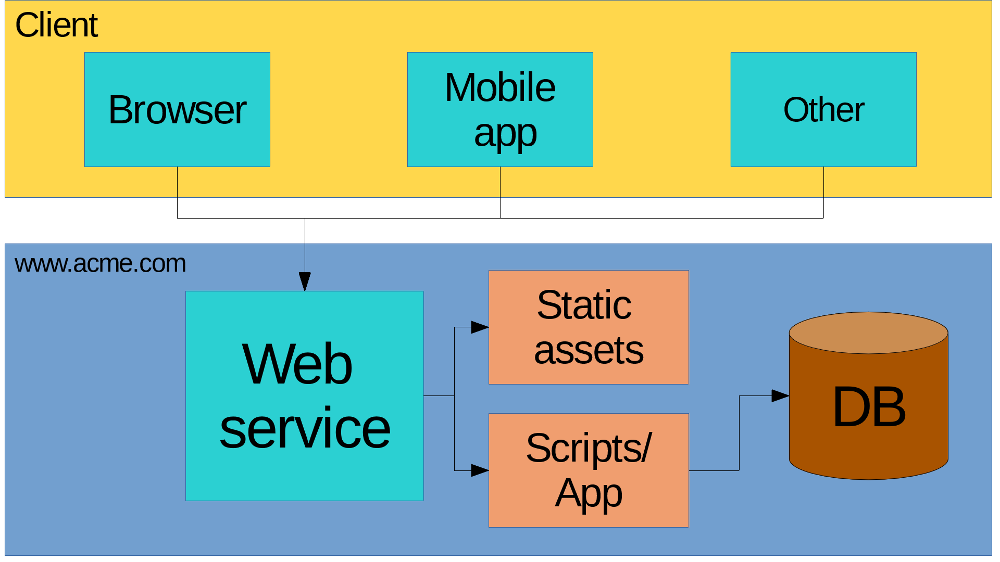

class: middle, center <img src="images/docker.png"/> --- class: middle # About me * Lead Software Engineer * ryanrolds@gmail.com * https://github.com/ryanrolds --- class: middle, center # Questions? Comments? Raise your hand. --- class: middle # Overview * Pain points * Containers * Docker * Docker Compose ---  --- class: middle # What next? Install Docker and dockerize your dev environment. Lots of great information here: https://docs.docker.com/get-started/ --- class: middle, center # Thanks <place holder for next event>